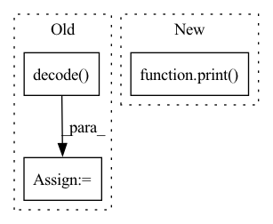

Pattern ID :23926

Before Change
//generate sample without image
sample_text = text[:1]
token_list = sample_text.masked_select(sample_text != 0).tolist()
decoded_text = self.tokenizer.decode(token_list)
x_gen = pl_module.generate_images(text[:1], filter_thres=0.9) // topk sampling at 0.9
pl_module.train()
After Change
sample_text = text[:1]
token_list = sample_text.masked_select(sample_text != 0).tolist()
decoded_text = self.tokenizer.decode(token_list)
print(decoded_text)
text = text.to(pl_module.device)
x = x.to(pl_module.device)
with torch.no_grad():
In pattern: SUPERPATTERN
Frequency: 3
Non-data size: 3
Instances
Fragment ID: 74424239
Project Name: tgisaturday/dalle-lightning
Commit Name: f8d6717d2acfd3b34ebff35c9c67973e0b7c5f59
Time: 2021-07-26
Author: jamesk1228@gmail.com
File Name: pl_dalle/callbacks.py
M Class Name: DalleImageSampler
N Class Name: DalleImageSampler
M Method Name: on_train_batch_end(7)
N Method Name: on_train_batch_end(7)
M Parent Class: Callback
N Parent Class: Callback
M File Name: pl_dalle/callbacks.py
N File Name: pl_dalle/callbacks.py
M Start Line: 209
M End Line: 219
N Start Line: 208
N End Line: 209
'>
Before Change
with torch.no_grad():
train_z = model.encode(batch.x, batch.edge_train)
if val:
link_logits = model.decode(train_z, batch.edge_val)
else:
link_logits = model.decode(train_z, batch.edge_test)
if val:
After Change
pred = (out > threshold).float() * 1
cum_score += average_precision_score(np.ones(pred.numel()), pred.cpu())
print(cum_score)
ngraphs += batch.num_graphs
return cum_score / ngraphs, model
'>
Fragment ID: 74424249
Project Name: fedml-ai/fedml
Commit Name: 0bed2c22b8b40421e77d045b17d8c3e54aff3d3f
Time: 2022-07-29
Author: emirceyani@gmail.com
File Name: python/app/fedgraphnn/ego_networks_link_pred/trainer/federated_lp_aggregator.py
M Class Name: FedLPAggregator
N Class Name: FedLPAggregator
M Method Name: _test(5)
N Method Name: _test(5)
M Parent Class: ServerAggregator
N Parent Class: ServerAggregator
M File Name: python/app/fedgraphnn/ego_networks_link_pred/trainer/federated_lp_aggregator.py
N File Name: python/app/fedgraphnn/ego_networks_link_pred/trainer/federated_lp_aggregator.py
M Start Line: 26
M End Line: 49
N Start Line: 27
N End Line: 52
'>
Before Change
text, x = batch
sample_text = text[:1]
token_list = sample_text.masked_select(sample_text != 0).tolist()
decoded_text = self.tokenizer.decode(token_list)
text = text.to(pl_module.device)
x = x.to(pl_module.device)
with torch.no_grad():
After Change
x = x.to(pl_module.device)
with torch.no_grad():
pl_module.eval()
print("fuck")
//generate sample with image provided
x_rec = pl_module.generate_images(text=text, img = x, filter_thres=0.9) // topk sampling at 0.9
print("fuck")
//generate sample without image
'>
Fragment ID: 74424246
Project Name: tgisaturday/dalle-lightning
Commit Name: 42e20bec303cdd55c251ee6a6a452cd8a5ef4e3e
Time: 2021-07-26
Author: jamesk1228@gmail.com
File Name: pl_dalle/callbacks.py
M Class Name: DalleImageSampler
N Class Name: DalleImageSampler
M Method Name: on_train_batch_end(7)
N Method Name: on_train_batch_end(7)
M Parent Class: Callback
N Parent Class: Callback
M File Name: pl_dalle/callbacks.py
N File Name: pl_dalle/callbacks.py
M Start Line: 202
M End Line: 246
N Start Line: 206
N End Line: 209